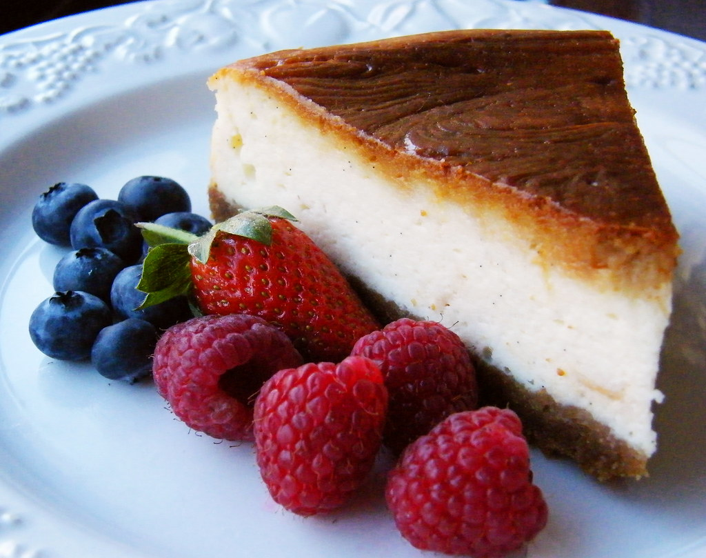

Creamy Baked Cheesecake

This condensed milk cheesecake has a creamy and smooth texture. You can top it with a fruit spread or even serve plain.
The secret for this cheesecake's creamy and smooth texture is sweetened condensed milk. Also, this is an incredibly easy to make dessert, perfect for beginners. And you don't really need to dress it or top it with anything really, it can be served plain and you'll still enjoy every single bite of it.
Ingredients
- 1 ¼ cups graham cracker crumbs
- ⅓ cup butter or margarine, melted
- ¼ cup sugar
- 2 (8 ounce) packages cream cheese, softened
- 1 (14 ounce) can of sweetened condensed milk
- 3 large eggs
- ¼ cup lemon juice (Optional)
- 1 (8 ounce) container sour cream, at room temperature (Optional)
- 1 (21 ounce) can cherry pie filling (Optional)
Steps
- Gather all ingredients.
- Preheat the oven to 300 degrees F (150 degrees C).
- Combine graham cracker crumbs, butter, and sugar in a large bowl; mix well.
- Press mixture firmly onto the bottom of a 9-inch springform pan.
- Beat cream cheese in a large bowl with an electric mixer on medium speed until fluffy.
- Gradually beat in condensed milk until smooth.
- Add eggs and lemon juice; mix well. Pour into the prepared pan.
- Bake in the preheated oven until center is set, 50 to 55 minutes.
- (Optional) Remove cheesecake from the oven; top with sour cream.
- (Optional) Continue baking until sour cream sets, about 5 minutes.
- Cool cheesecake at room temperature for 1 hour, then chill in the refrigerator for at least 4 hours.
- (Optional) Garnish with pie filling before serving.
- Store leftovers -covered- in the refrigerator.
Home